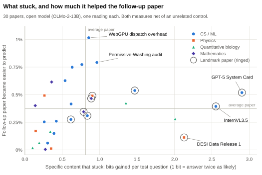
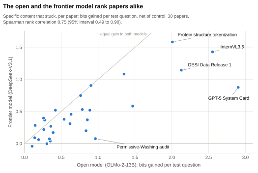

Main experiment: 30 papers
Across 30 new papers, the open and the frontier model agree on which papers contribute most, and each paper makes its own follow-up easier to predict; the test cannot tell true claims from altered ones.
The question#
Do the pilots’ findings hold across many papers and two model families? We trained OLMo-2-13B (open) and DeepSeek-V3.1 (frontier) on 30 papers they had not seen, with four pre-registered questions. Does the open model rank papers the way the frontier model does (H-A)? Does a paper make its own follow-up, the later paper that cites it, easier to predict (H-B)? Does the true paper beat a copy with its key claims altered (H-C)? Does a paper add something beyond three earlier papers by other authors (H-D)?
What we did#
- Papers. 30 arXiv papers: CS/ML 15, physics 5, quantitative biology 5, math 5. 21 were posted after 1 August 2025 and are new to both models; 9 may be in DeepSeek-V3.1’s training data. 9 are landmarks, among the most-cited 10% of their field.
- Reading. One epoch of LoRA per paper, at a matched dose: the paper’s own loss fell 6.23% (OLMo) and 6.25% (DeepSeek).
- Arms, two seeds each (276 runs per model): the true paper; an altered copy with 5–20 key numbers and comparison words changed by script; a random-edit copy with as many edits elsewhere; and a control of unrelated papers of the same length.
- Tests. 12 recall probes per paper; 746 belief probes (does the model prefer the true or the altered value of a claim?); the follow-up’s text, with copied phrases masked out (copy mask); and the follow-ups of the other papers in the batch (field transfer).
- Unique contribution. 9 papers were also read after their three most-cited recent references by other authors. The increment is what the paper adds beyond them.
What we found#
Pre-registered verdicts:
- H-A, open = frontier: SUPPORTED. The models rank papers alike on facts absorbed (rank correlation 0.75), follow-up gain (0.74) and field transfer (0.68). Belief disagreed (−0.04): it barely moved in either model. Sizes differ: the frontier model absorbs 0.57 times as much specific content, but its follow-up gain is 0.94 times as large.
- H-B, anticipation: SUPPORTED in both models. A paper makes its own follow-up more predictable than other papers’ follow-ups (the T* statistic). Net of the control, the follow-up gains about 0.4% of its difficulty, and the sentences that cite the paper gain about 1%.
- H-C, truth: not established. Belief probes track whichever claims were trained: after the altered copy, the models prefer the altered values (+0.08 bits per claim in both). That is learning, not truth. On citing sentences, OLMo shows nothing. DeepSeek passes the rule with the wrong pattern: the random-edit copy beat the true paper, which did not beat the altered one. By rule, H-C was PARTIAL in OLMo and SUPPORTED in DeepSeek; the report reads neither as evidence about truth.
- H-D: the recall increment is above zero in both models (+1.34 and +0.85 bits per question). About half (OLMo) to two-thirds (DeepSeek) of the follow-up gain also survives the predecessors.
Descriptive, examined afterwards:
- An altered copy scores the same as the true paper. On recall, the true, altered and random-edit versions each add 0.81 bits per question in OLMo, and the follow-up gain is identical.
- On the altered claims, the fake values registered more strongly than the true ones did. The altered copy moved OLMo 0.07 bits toward the fakes; the true paper moved it 0.04 bits toward the truth. In DeepSeek the altered copy moved it 0.13 bits toward the fakes, and the true paper moved it slightly the wrong way (−0.05). We have not tested why.
- Famous papers taught 2–3 times more facts but did not help their follow-ups more. Landmarks gained 1.45 bits per question against 0.54 for ordinary papers in OLMo, and 0.72 against 0.35 in DeepSeek. Their T* was smaller in OLMo (+0.0023 against +0.0050) and about the same in DeepSeek (+0.0060 against +0.0057).
- Being absorbed is not the same as helping later work. The clearest case is a data release. DESI Data Release 1 ranks 3rd of 30 on facts in both models, but 25th and 29th on its follow-up, which uses it only as a data source. This is one case, not a rule. The top follow-up gain in both models is a WebGPU privacy study after a WebGPU performance paper.

What stuck, and what it did for the follow-up, per paper (open model). Follow-up gain is net of the control, as a share of the model’s average surprise on follow-up text.

Facts absorbed per paper in the two models. Spearman rank correlation 0.75 (95% interval 0.49 to 0.90). Most points sit below the equal-gain line: at the same dose, the frontier model takes in less.
What it means for appraisal#
- An open model is a fair stand-in for the shape of an appraisal: where a document contributes and how it ranks against others. It does not give absolute sizes on a frontier model.
- A report can claim three things: the model absorbs your specific content; your document makes later work that builds on it more predictable; part of this is yours alone.
- It cannot claim the content is true. The measurement rewards what a paper says, true or not.
- Report facts absorbed and help to later work separately. A famous paper or a data release can top one and not the other.
Key numbers#
| Measure | OLMo-2-13B | DeepSeek-V3.1 | Between models / verdict |
|---|---|---|---|
| Dose: drop in the paper’s own loss | 6.23% | 6.25% | per-paper ρ 0.97 [0.91, 0.99] |
| Facts absorbed, net of control (bits per question) | +0.811 | +0.463 | ρ 0.75 [0.49, 0.90] |
| Own follow-up gain, net of control (mbit per byte) | +1.90 | +1.78 | ρ 0.74 [0.53, 0.86] |
| Field transfer, net of control (mbit per byte) | +1.09 | +0.84 | ρ 0.68 [0.40, 0.86] |
| Belief, net of control (bits per claim) | +0.035 | −0.045 | ρ −0.04 [−0.44, 0.36] |
| H-A open = frontier | SUPPORTED (3 of 4 tiers) | ||
| H-B T* (bits per token) | +0.0042 [+0.0029, +0.0053], p = 0.0014 | +0.0058 [+0.0040, +0.0078], p = 0.0002 | SUPPORTED in both |
| H-C1 citing sentences: random-edit minus altered copy (bits per token) | +0.0004 [−0.0011, +0.0019] | +0.0106 [+0.0040, +0.0185] | OLMo no; DeepSeek passes by rule, wrong pattern |
| H-C2 belief: random-edit minus altered copy (bits per claim) | +0.081 [+0.053, +0.116] | +0.080 [+0.042, +0.133] | tracks claims, not truth |
| H-D recall increment over 3 predecessors (bits per question) | +1.34 [+0.94, +1.79] | +0.85 [+0.67, +1.08] | above zero in both |
| Follow-up increment (bits per token; share of the paper alone) | +0.0041 [+0.0005, +0.0075] (45%) | +0.0075 [+0.0034, +0.0113] (71%) | descriptive |
| Recall: true / altered / random-edit, net of control (bits per question) | +0.81 / +0.81 / +0.81 | +0.46 / +0.45 / +0.45 | descriptive |
Units: bits per question is surprise removed from a probe’s answer (1 bit means twice as likely). Bits per token and mbit (thousandths of a bit) per byte measure surprise removed from text. ρ is the Spearman rank correlation across the 30 papers. Brackets are 95% bootstrap intervals.
Caveats#
- One light dose: LoRA, one epoch, about a 6% drop in the paper’s own loss. Effects are small, and heavier training can change the profile, as in the Navier–Stokes pilot.
- DeepSeek-V3.1 is a post-trained chat model scored on raw text, so cross-model comparisons use ranks and per-byte measures only.
- Altered copies change only numbers and comparison words. Only 8 papers had such a claim in a citing sentence, and citing text is sparse (median about 70 tokens per paper).
- Probes were written by AI agents (Claude) from the papers under a frozen protocol, not by independent buyers.
- H-D covers 9 papers in two fields (CS/ML and physics).
- The descriptive findings rest on few papers. Landmarks are also longer on average (about 18,000 against 11,800 tokens), which may explain part of their larger fact gain.
Cost and date#
Pre-registered 20 October 2026; reported 21 October 2026. Tinker (DeepSeek): $39.35, an estimate from token counts. RunPod (OLMo): $3.68. $43.0 in all, against a $90 cap.
Sources and reproduction#
- Pre-registration and report:
planning/MAIN_EXPERIMENT_PREREG.md,planning/MAIN_EXPERIMENT_REPORT.md. - Numbers:
runs/phase1c/main_exp/(results.json,effects.json,posthoc.json,tables.md); frozen items indata/manifests/main_exp_items.json. - Code:
src/cpappraise/mainexp/,scripts/main_exp/(calibrate.py,tinker_run.py,analyze.py,posthoc.py,tables.py),tests/test_main_exp.py, probe protocolprompts/main_exp_probe_protocol.md, lane configsconfigs/lane_1c_mx_cal.jsonandconfigs/lane_1c_mx_1.jsonto_3.json. - Chart data:
data/interim/main_exp/reports/per_paper.json, local and not committed, like the paper texts, edited copies and probes. - To rerun or extend: Reproduce. A plain-language report built from these data: What a report could look like.